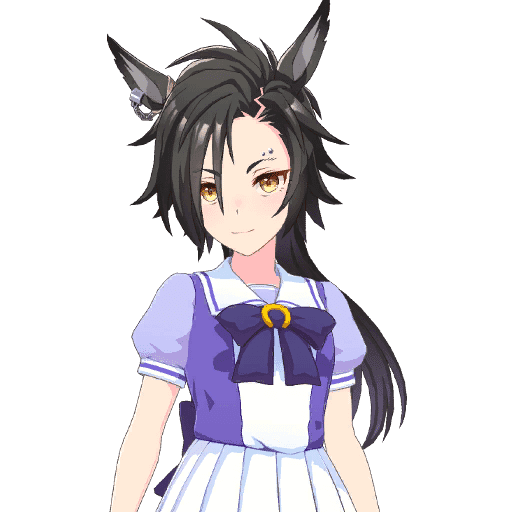

Sobre o Freevertio
O Freevertio é um site criado por Fernando Nishio como projeto para a disciplina de SCOM.
A conversão de imagens e de arquivos de dados acontece no próprio navegador, sem que o arquivo saia do computador. Os formatos que o navegador não alcança — PDF e documentos do Office — são convertidos no servidor, e só com autorização explícita a cada conversão. Nada é guardado sem que você marque a opção de guardar.
